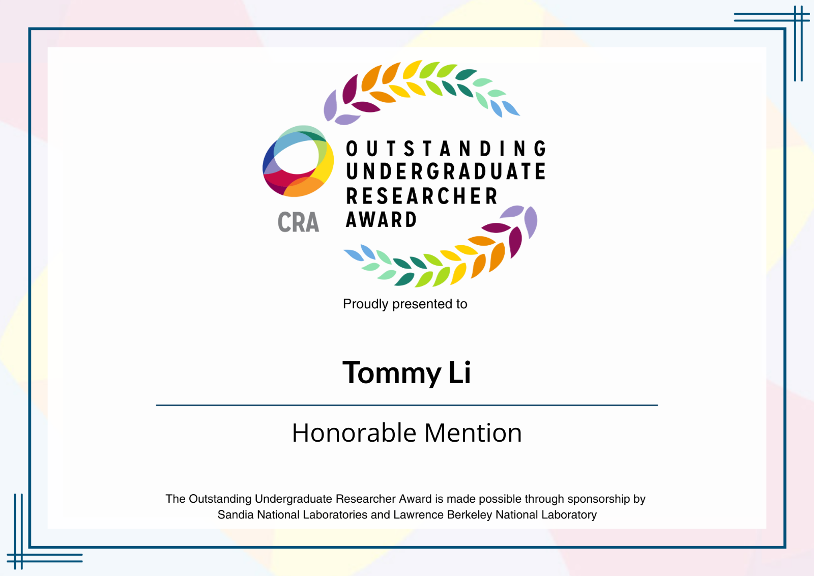

Kaiyuan (Kevin) Tan
Education

Ph.D. in Computer Science
Vanderbilt University | 2024 - 2029- Researh Focus: Robotics, Machine Learning, Dynamics Learning, and Control.
MSc. in Electrical Engineering
Washington University in St.Louis | 2021 - 2023- Researh Focus: Robotics, Machine Learning, Adversarial Attacks, and Security.

B.Eng. in Information Engineering
Sun Yat-Sen University | 2017 - 2021- Computer Science: Advanced Machine learning, Reinforcement Learning, Image Processing, Algorithms for Decision-making, Software Engineering.
- Electrical Engineering: Wireless Communication, Digital Signal Processing, Real and Complex Analysis, Statistical Inference and Probability.
Research Experiences
Graduate Researcher
Vanderbilt University | Oct 2023 - Present Supervised by Professor Thomas Beckers:- Physics-Informed Diffusion Model without Underlying Functions: Proposed and developed a physics-informed diffusion model that can be used to model the dynamics of the system with uncertainty quantification and required minimal knowledge of the system.
- Plug-and-Play Physics-Informed Model for Out-of-Distribution Dynamics: Proposed and developed framework for detecting outlier dynamics detection algorithms based on conformal prediction. Then fast and efficient plug-in physics-informed model can be constructed for outlier dynamics.
- Uncertainty-aware MPC Controller: Proposed and developed physics-informed and uncertainty-aware scenario-based Model Predictive Controll for soft robot systems.
- Toolbox for Modeling Dynamics: Developed and collaborated PyGpPHs, a Python package based on Gaussian Process port-Hamiltonian System, that shows high accuracy, efficiency, and generalizability in modeling non-linear dynamics.
- Probabilistic Modeling with PDE: Designed, developed, and collaborated Bayesian modeling approaches to distributed Port-Hamiltonian System, and collaborated in implementing GP-dPHS models.
Graduate Researcher
Washington University in St.Louis | May 2022 - May 2023 Supervised by Professor Yiannis Kantaros:- Targeted Adversarial Attacks against Autonomous Vehicles and Preventive Defense: Exploring targeted adversarial attacks against autonomous vehicles, so that the vehicle can be deceived to make wrong decisions without being noticed by human, and developing preventive defense methods to protect the vehicle from such attacks. (My Master's Thesis)
- Large Language Models for Robot Task Planning: Aiming to solve the problem that LLM/VLM are not able to handle the complex task planning for robots. we proposed a framework to decompose the complex task into a sequence of sub-tasks using temporal logic, and then use LLM/VLM to generate the task plan for robots, and guide the robot to perform the complex task automatically.
- Conformal Prediction for Autonomous Vehicles Outlier Detection: Studied the conformal prediction theory and applied it to the outlier detection of autonomous vehicles. In this way, the vehicle can be protected from the abnormal sensor failure that may lead to wrong decisions.
- Reinforcement Learning for Robot under Environmental Uncertainty: Studied the reinforcement learning theory and applied it to the robot control under environmental uncertainty. In this way, the robot can be protected from the abnormal sensor failure that may lead to wrong decisions.
Publications
Peilun Li, Kaiyuan Tan, and Thomas Beckers. ”NAPI-MPC: Neural Accelerated Physics-Informed MPC control for nonlinear PDE systems”. 7th Conference on Learning for Dynamics and Control (L4DC), 2025. (Accepted)
Kaiyuan Tan, Peilun Li, Jun Wang, and Thomas Beckers. ”PnP-PIML: Physics-informed Learning of Outlier Dynamics using Uncertainty Quantified Port-Hamiltonian Models”. IEEE International Conference on Robotics and Automation (ICRA), 2025. (Accepted)
Peilun Li, Kaiyuan Tan, and Thomas Beckers. ”PyGpPHs: A Python Package for Bayesian Modeling of Port-Hamiltonian Systems”. In: Proceedings of the 8th IFAC Workshop on Lagrangian and Hamiltonian Methods for Nonlinear Control (LHMNC). 2024.
Kaiyuan Tan, Peilun Li, and Thomas Beckers. ”Physics-Constrained Learning for PDE Systems with Uncertainty Quantified Port-Hamiltonian Models”. In: Proceedings of the 6th Conference on Learning for Dynamics and Control (L4DC). 2024.
Honors and Awards

CRA Outstanding Undergraduate Researcher Award - Honorable Mention (2025)
Computing Research Association (CRA) | 2024-2025Recognized among fewer than 200 undergraduate researchers in North America for exceptional academic and research contributions and potential in computer science.
Awards from Vanderbilt University:
- VUSE-ISIS Summer Research Fellowship ($8000) | Mar 2024
- School of Engineering Research Travel Grant ($500) | Feb 2024
- Tennessee Beta Chapter of Tau Beta Pi (TBP) at Vanderbilt University | Dec 2023
Award extended to undergraduate engineering majors who are in the top 12.5% of Class of 2025. - School of Engineering Award Undergraduate ($5000) | May 2023
Scholarship award to 40 excelling undergraduate students in the School of Engineering. - Dean's List | Dec 2021 - Present
Teaching
Teaching Assistant (TA)
Vanderbilt University | Aug 2022 - Present- CS4275/5275: Error Analysis in Safety Critical Systems | Spring 2025
- CS3891/5891: Autonomous Vehicles and Traffic | Fall 2024
- CS4275/5275: Error Analysis in Safety Critical Systems | Spring 2024
Conferences Attended
16th World Congress on Computational Mechanics (WCCM)
Vancouver, British Columbia | Jul 2024Delivered 20-minute oral presentations on:
- Our paper on PyGpPHs toolbox for Bayesian Modeling of Port-Hamiltonian Systems
- Our paper on Physics-Constrained Learning for PDE Systems with Uncertainty Quantified PHS
Institute for Software Integrated System (ISIS) 25th Anniversary Celebration
Nashville, TN | Aug 2023Presented our recent work on “Bayesian Physics-Informed Models for Soft Robotics.”
Shanks Workshop on Advances in Theoretical Biology and Mathematical Biology
Nashville, TN | Mar 2023Presented my work on Age-Structured Systems of ODE Modeling on COVID-19.